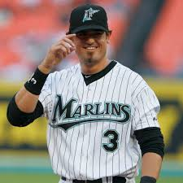

Jorge Cantú es un infielder mexicano nacido en Estados Unidos, ex jugador profesional de béisbol que pasó ocho años en las Grandes Ligas (2004–2011), jugando para los Tampa Bay Rays, Cincinnati Reds, Florida Marlins, Texas Rangers y San Diego Padres. Nacido en McAllen, Texas y criado en Reynosa, Tamaulipas, México, Jorge tiene raíces profundas a ambos lados de la frontera. Registró una línea ofensiva de carrera de .271/.316/.439 con 104 jonrones y 476 carreras impulsadas en 847 juegos, con una destacada temporada en 2005 de 28 jonrones y 117 impulsadas. Más tarde jugó en la liga KBO con los Doosan Bears y disfrutó de una carrera profesional de más de 20 años. Jorge se une a Forward Motion Project México como Embajador en México, donde liderará nuestros esfuerzos de expansión para llevar herramientas gratuitas de desarrollo atlético con IA a los jóvenes atletas de todo México.